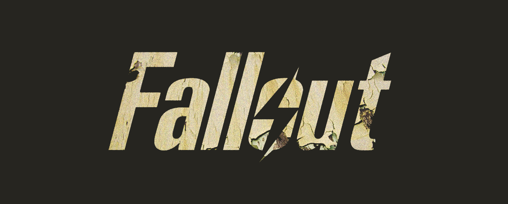

Fallout Generic
Concept
In the animation above, I show the classic vault boy in a Black and White style, like in the S.P.E.C.I.A.L. video, but with a more hand-drawn look. I also show the bomb-dropping scene where the entire fallout universe is created. At the end I end with a classic burning letters effect like the show.
The concept behind this piece was to experiment with as many animation styles as possible that I learned in my motion design class, while keeping the classic feel of the Fallout universe, something the live action adaptation doesn’t quite capture. This experimental opening also works as an alternative to the show’s intro, bringing back Vault Boy, the franchise’s mascot, who was almost ignored in the series.
Tools and Tecnics
The techniques used include Risography, frame to frame animation, 3D, 2D, 3D layers, parallax, fake 3D and VFX.
The Tools used were Photoshop for the Frame to frame, risography and most 2D, After Efects for the 3D layers, Paralax, fake 3D and VFX, Blender for 3D, and Premiere for sound and pos production.
